Nose cone, body tubes, fins and motor mount — assembled from a live component tree with instant stability feedback.
Phase 02 · Propulsion
Choose the motor
1,100+ certified motors with real measured thrust curves — or design your own liquid engine.
Phase 03 · Analyse
Simulate everything
SU2 CFD, CalculiX structures and fin flutter — all solved on the same live rocket model.
Phase 04 · Liftoff
Fly it.
Full 6DOF flight with wind, launch rail and staging — stepped through every phase.
T+ 00.00 sIGNITIONALT 0 mVEL 0.0 m/s
Scroll to discover
K2AEROSIM
Loading 5 phases0%
OPEN SOURCE · ROCKET SIMULATION · MULTI-PHYSICS
Design it. Fly it. Before you build it.
K2 AeroSim is an integrated simulation platform for high-power and
experimental rockets — 6DOF flight simulation, CFD, structural FEM, internal
ballistics, recovery and avionics, unified in a single desktop platform.
The whole platform in a single take — design, propulsion, CFD, structures, flight, Monte Carlo, optimization and the AI assistant.
k2 — promo · 1:01
THE WORKSPACES
One rocket, every workspace.
K2 brings the whole design loop under one roof — airframe design, propulsion, CFD, structures, dynamics, avionics, 6DOF flight and recovery — all sharing a single live rocket model. Every image below is the actual software, showing one rocket designed, analyzed and flown end-to-end. Click any shot to enlarge.
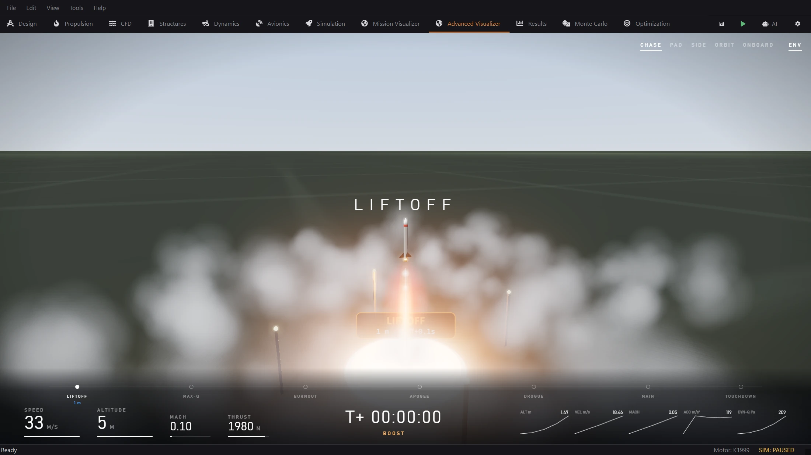
Advanced Visualizera webcast-style replay of your flight with a live HUD and follow camera, rendered in real time.
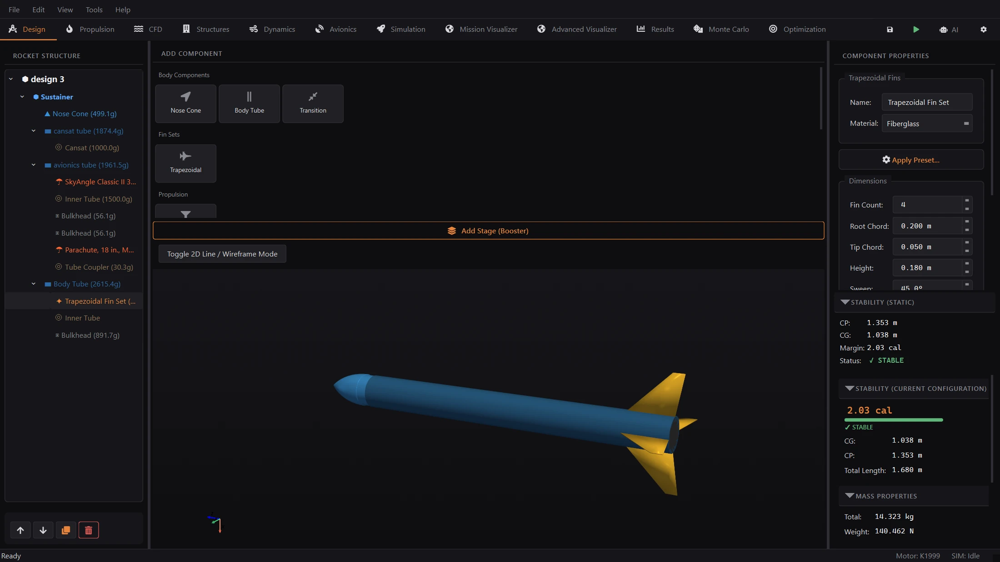
Designbuild the airframe from a component tree with a live 3D preview and instant stability feedback.
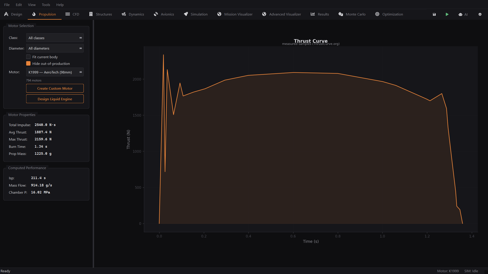
Propulsionpick from the full certified-motor catalog and see real measured thrust curves and motor performance.
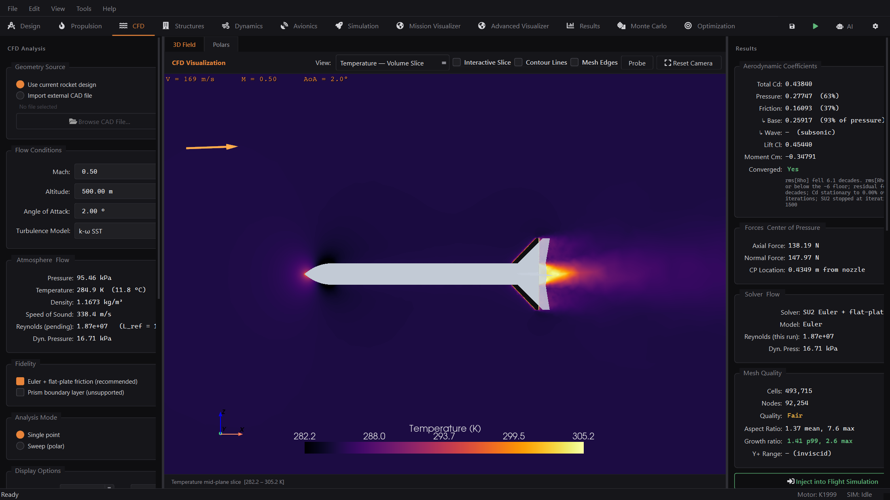
CFD — flow fieldrun SU2 solves straight from your design and explore the 3D temperature, pressure and velocity fields.
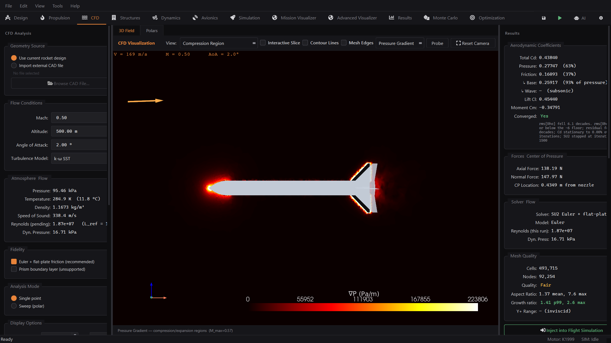
CFD — drag & pressurevisualize compression regions and get a full aerodynamic-coefficient and drag breakdown.
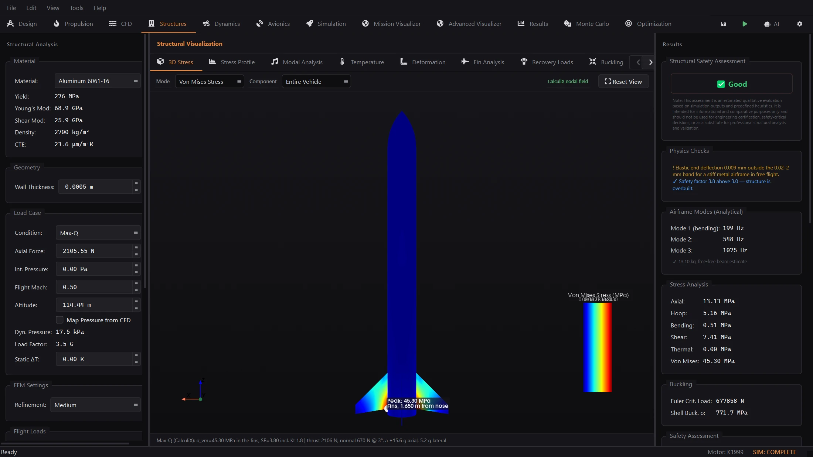
Structuresrun FEM stress, buckling and modal analysis on the airframe with a structural safety verdict.
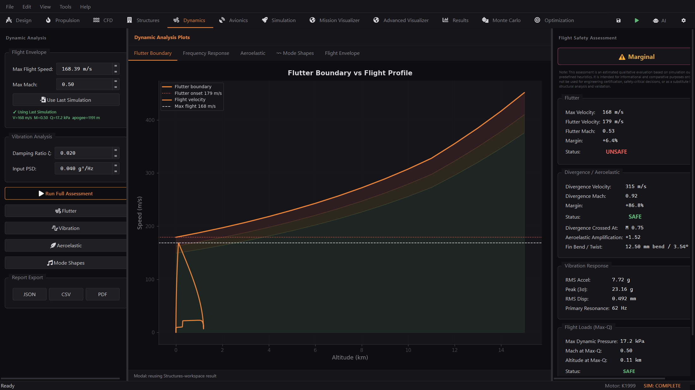
Dynamicscheck fin flutter, resonances and aeroelastic margins against the flight envelope.
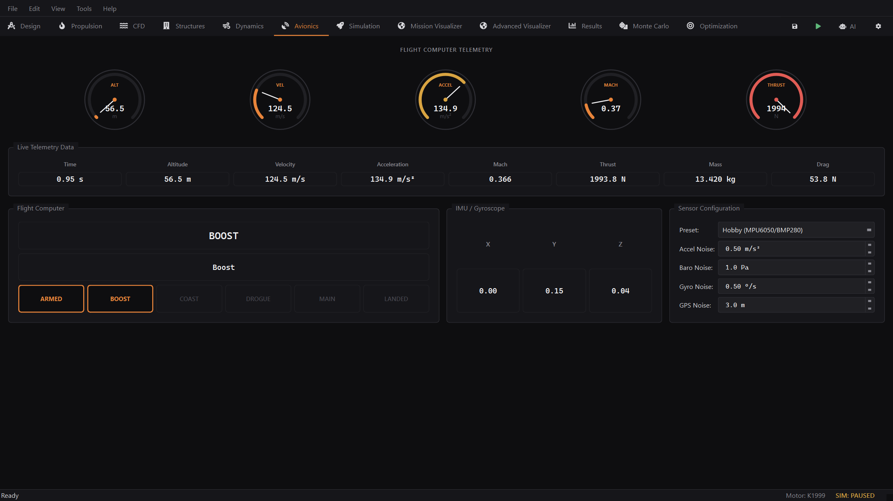
Avionicstest a simulated flight computer with realistic noisy sensors, state estimation and event detection.
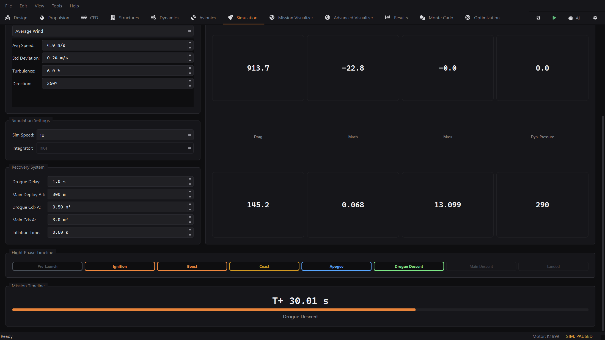
Simulationset the wind, launch rail and recovery, then watch the 6DOF flight step through each phase.
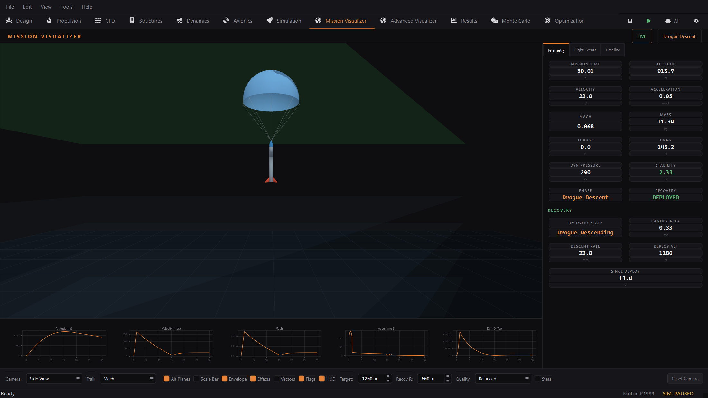
Mission Visualizerwatch the flight in live 3D with full telemetry, sparkline graphs and recovery status.
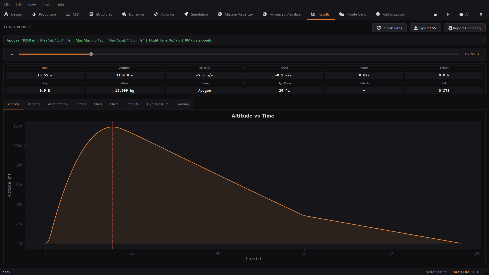
Flight Resultsscrub the full flight history across every channel and export the data to CSV.
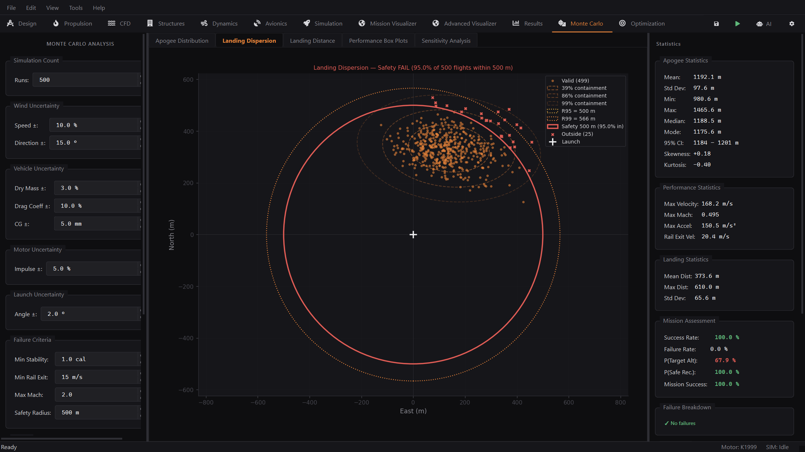
Monte Carlofly hundreds of dispersed flights and see where the rocket is likely to land.
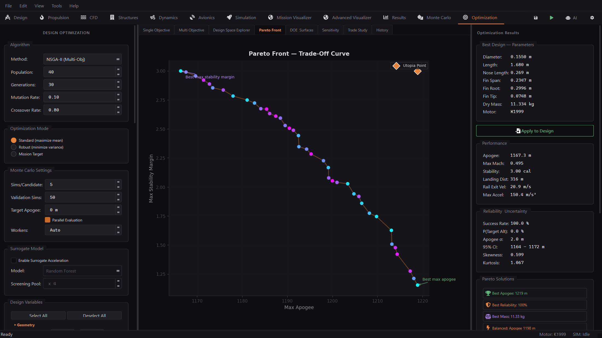
Optimizationstate the objectives and constraints, and let the optimizer map the trade-off.
From the first sketch of the airframe to a validated trajectory, structural margins and recovery sequence — without leaving the app.
6DOF Flight Simulation
Full six-degree-of-freedom rigid-body dynamics with RK4 and adaptive RK45 Dormand–Prince integrators, ISA atmosphere, wind and turbulence models, launch-rod dynamics and stability-margin tracking through the whole flight.
Quaternion attitude propagation
Gust and turbulence injection
Apogee, max-Q, Mach and stability time histories
CFD — Powered by SU2
Automatic watertight geometry export, gmsh meshing with curvature refinement, and SU2 Euler / RANS solves driven straight from your design. AoA / Mach sweep polars with a hybrid Euler + flat-plate-friction drag mode.
Airframe stress, buckling and modal analysis through a bundled CalculiX solver, with CFD surface pressures mapped directly onto the FEM mesh as distributed loads. Thin-shell results cross-checked against Roark closed forms.
CFD → FEM pressure mapping
Thermal & pressure-vessel analysis
3D stress viewer + automated reports
Propulsion & Internal Ballistics
The complete ThrustCurve.org certified-motor catalog — 1,129 motors — searchable by class, diameter and airframe fit, plus internal-ballistics grain simulation for experimental solid motors.
Real measured thrust curves
Motor class / diameter / fit-to-body filters
Grain regression modelling
Aerodynamics & Aeroelasticity
An OpenRocket-ported Barrowman implementation for instant CP/CG stability, transonic drag tables, and fin-flutter prediction using the NACA TN-4197 method with a p-k aeroelastic solver.
Barrowman CP matches OpenRocket exactly
Fin flutter & divergence speed envelopes
Component-level drag build-up
Monte Carlo & Optimization
Dispersion analysis over wind, thrust, mass and aero uncertainties; landing-ellipse statistics; design-of-experiments studies; and multi-variable design optimization toward apogee or stability targets.
Parallel batch runs
Landing scatter & confidence ellipses
DOE parameter studies
Recovery
Drogue and main parachute modelling with deployment logic, descent-rate dynamics and dual-deploy event sequencing — wired into the same 6DOF state as the ascent.
Dual-deploy staging logic
Descent-rate & drift prediction
Opening-shock estimation
Avionics & State Estimation
A simulated flight computer with sensor models (IMU, barometer, GPS), Kalman-filter state estimation and telemetry — test your flight software logic against realistic noisy data before it ever flies.
Sensor noise & bias models
Kalman altitude/velocity fusion
Event-detection logic (liftoff, burnout, apogee)
Mission Visualization & Cinematic Replay
A live 3D mission visualizer plus a cinematic three.js replay view with a SpaceX-style HUD, flight-envelope overlays and synced mini-graphs — watch the flight you just simulated.
Live 3D trajectory with vehicle attitude
Replay scrubbing & HUD telemetry
Flight-envelope visual overlays
In-App AI Design Assistant
A dockable assistant that reads your live rocket model, explains the numbers, and edits the design for you through a tool bridge — change a fin, run a sim, fast-forward a flight, all from a sentence. Free Gemini backend by default, or Ollama for fully offline local use.
Reads the live model & latest results
Tool bridge: edit components, run sims
Cloud (Gemini) or offline (Ollama)
OpenRocket Interop
Import existing .ork designs with exact component positioning and round-trip serialization, or start from K2's own .k2proj format. Your OpenRocket fleet carries straight over.
.ork import with exact CP agreement
Round-trip save / load fidelity
JSON-based open project format
THE COCKPIT
Twelve workspaces, one state engine.
Every tab reads and writes the same live rocket model — change a fin in Design and the CFD, structures and simulation workspaces see it instantly.
A dedicated validation suite benchmarks every engine against independent references — exact analytical solutions, established codes and textbook closed forms — gated in CI with pytest.
Taylor–Maccoll exact supersonic cone flow vs NACA-1135 tables
SU2 — cone surface Cp agrees within ~4%
✓ Gated
Structures
Roark thin-shell hoop stress, Euler buckling closed forms
CalculiX — tension, bending, modal decks
✓ Gated
Stability
Barrowman method (OpenRocket port)
Exact CP agreement with OpenRocket on imported .ork designs
✓ Verified
Flutter
NACA TN-4197 method + p-k solver
—
✓ Verified
Atmosphere
ISA standard-atmosphere tables
—
✓ Verified
Run it yourself: pytest tests/validation -q · full credibility report: python -m validation.report --full
Beta Notice
K2 AeroSim is an actively developed open-source engineering platform. While every
effort has been made to implement and validate the underlying physics and numerical
methods, the software may still contain bugs, implementation errors, or inaccuracies.
Simulation results should not be considered a substitute for professional engineering
analysis, certification, or flight testing. Always independently verify critical
calculations and validate designs before manufacturing or launch.
If you encounter unexpected behavior, incorrect results, crashes, or have suggestions
for improvement, please report them through the project's
GitHub Issues
page. Community feedback is invaluable in helping improve the accuracy, reliability, and
usability of K2.
Thank you for helping make K2 AeroSim better.
GET K2
Download the full platform.
Free and open source under GPL-3.0. Everything included — all twelve workspaces, the motor catalog, the validation suite and the bundled solver interfaces.